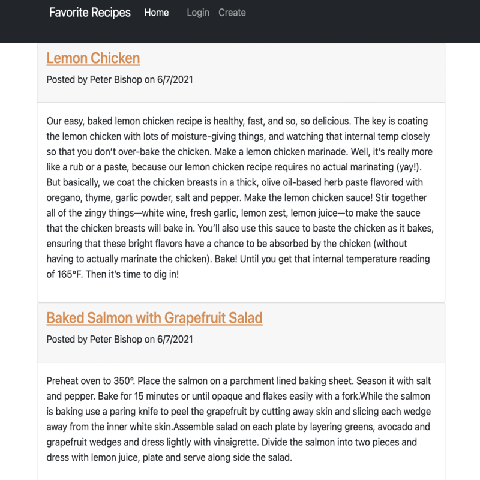

App Description
The Favorite Recipe website it a blog style application that allows
users to sign up and create posts featuring their favorite recipes and
comment on others.

How It Works
Opening the site, the user is required to sign up or login, and then
is brought to a page to create a post. That post is then displayed on
the home page with all of the other recipes posted. A user can click
on the post and will see when and who posted it. The user can comment
on posts, and update or delete their posts or comments.